Evidence A
Direct skill practice or domain-specific measurement inside the software.
Curated Nintendo Switch reference board
Browse a selective catalog of Nintendo Switch titles through the lens of useful mechanics: creating, reasoning, moving, coordinating, or settling into low-stress routines.
How to read the board
Each note pairs the game mechanic with one conservative real-world usefulness angle and an evidence grade. Evidence A means direct built-in practice. Evidence B means good mechanic-level support. Evidence C means plausible but indirect.
The board separates direct practice from plausible but weaker transfer claims.
Evidence A
Direct skill practice or domain-specific measurement inside the software.
Evidence B
Strong drill structure or mechanic-level support, but not game-specific proof.
Evidence C
Plausible usefulness with more indirect support; worth trying, not proven.
Make something
Games and tools that ask you to design, draw, compose, or prototype instead of only consume.
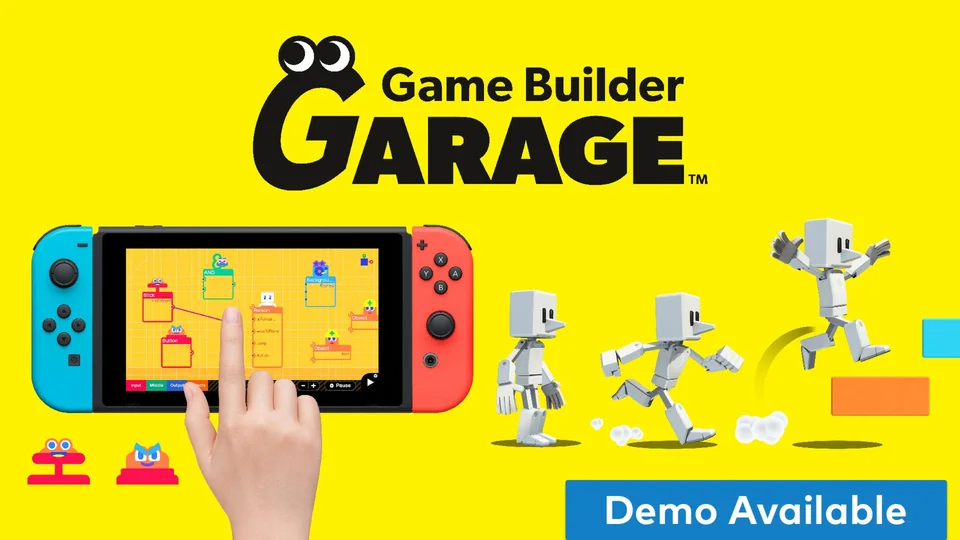
ACreative production
Guided lessons and a free-build mode for making small games with Nintendo's visual programming system.
Useful for first exposure to logic, iteration, and design thinking.
Official page Research PDF Image source
Image from Nintendo product page.
You are not just solving levels here. The core activity is wiring together behaviors, inputs, outputs, and feedback loops so a playable toy or small game actually works.
That makes the value fairly direct: it gives beginners a low-friction way to see how game rules, event chains, and debugging fit together. It is closer to guided making than to vague 'brain training.'
This belongs in Evidence A because the skill practice is built into the product itself rather than inferred from genre.
Evidence A. Direct skill practice or domain-specific measurement inside the software.
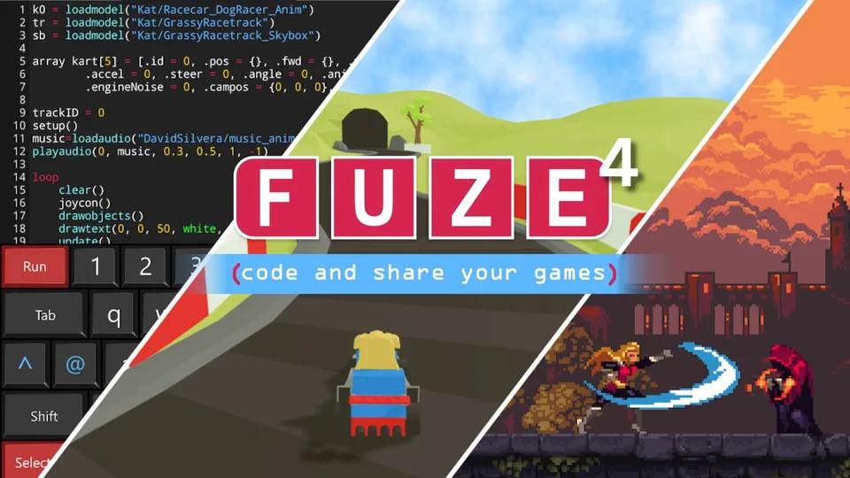
ACreative production
A text-based coding environment on Switch with tutorials, reference material, and built-in tools for small projects.
Useful when you want actual scripting and project-building on the console.
Official page Research PDF Image source
Image from Nintendo product page.
FUZE4 leans much closer to a compact development environment than to a normal puzzle game. You write code, work through tutorials, and combine sprites, tile maps, and sound into working projects.
That makes its usefulness straightforward: the player is practicing real programming habits such as reading references, editing scripts, testing output, and revising mistakes.
It is still limited compared with a desktop setup, but the core loop is direct enough to justify an Evidence A placement.
Evidence A. Direct skill practice or domain-specific measurement inside the software.
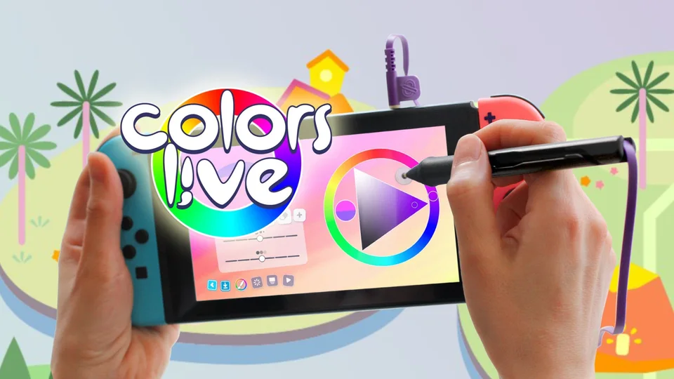
ACreative production
Portable digital art studio on Switch with layers, brushes, and a structure that encourages regular drawing sessions.
Useful for drawing practice and familiarity with digital art workflow.
Official page Research PDF Image source
Image from Nintendo product page.
Colors Live is built around making finished drawings, not pretending to be a game about drawing. The important parts are the brush control, layers, color choices, and the simple habit loop of returning to the canvas.
That makes it a strong fit for deliberate art practice, especially if you want a lightweight device for sketching, composition trials, and short regular sessions.
It does not replace formal instruction, but the software is plainly an art tool with game-like motivation wrapped around it.
Evidence A. Direct skill practice or domain-specific measurement inside the software.
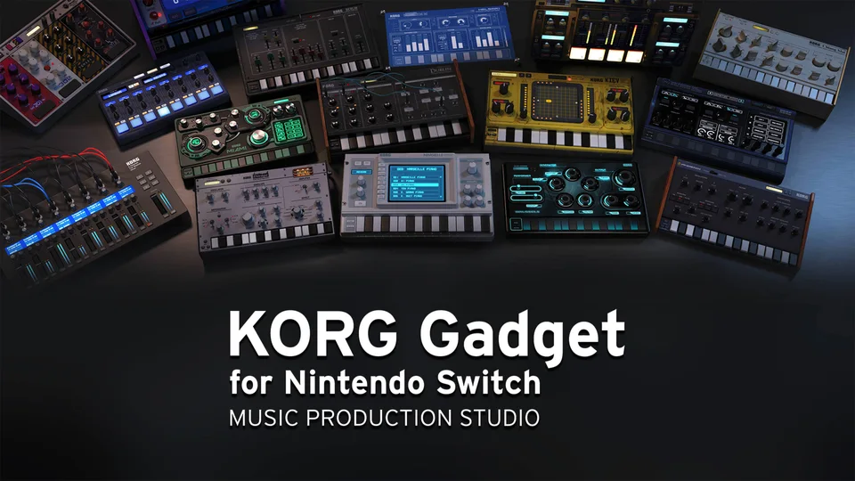
ACreative production
Music creation software on Switch with synth gadgets, sequencing, arrangement tools, and performance-oriented controls.
Useful for composition habits and basic DAW literacy.
Official page Research PDF Image source
Image from Nintendo product page.
The real activity here is composing: building patterns, arranging parts, auditioning sounds, and refining a track inside a simplified but recognizable production workflow.
That gives it a clearer real-world use case than most entertainment-first music games. A player is practicing sequencing logic, arrangement decisions, and the rhythm of iterative creative work.
Evidence A fits because the product is fundamentally a music-making environment, even if it presents itself with console-friendly charm.
Evidence A. Direct skill practice or domain-specific measurement inside the software.
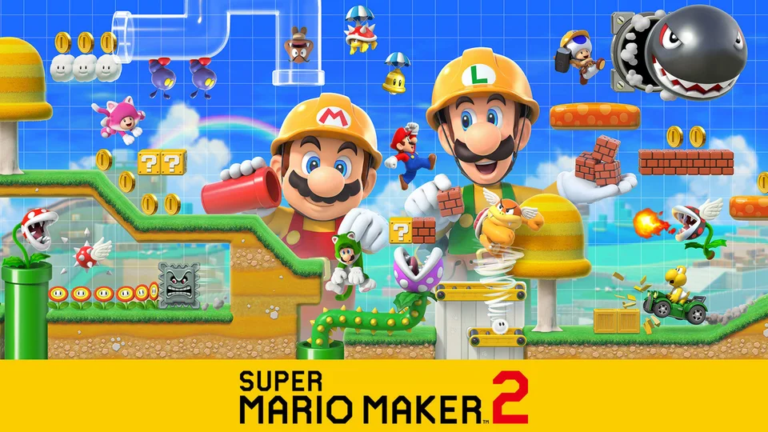
ACreative production
A build-test-share toolset for making Mario courses, checking them in play, and refining them through iteration.
Useful for level design thinking and fast prototype-feedback loops.
Official page Research PDF Image source
Image from Nintendo product page.
The important loop in Mario Maker is not only building. It is building, testing, noticing failure points, then adjusting the layout until the course reads the way you intended.
That repeated prototype-feedback cycle is genuinely useful design practice. It teaches pacing, difficulty tuning, player guidance, and the value of seeing your own ideas break in motion.
It is still playful and accessible, but the design habits it encourages are concrete enough to justify high confidence.
Evidence A. Direct skill practice or domain-specific measurement inside the software.
Think in rules
Titles built around debugging, constraints, automation, and multi-step reasoning.
Systems and logic
Programming-flavored puzzles about sequencing instructions, debugging behavior, and optimizing a simple process.
Useful for algorithmic thinking without requiring prior coding experience.
Official page Research PDF Image source
Image from Nintendo product page.
Each puzzle asks you to write a tiny instruction set that reliably transforms inputs into outputs. The satisfaction comes from watching logic succeed or fail in a visible way.
That is a direct practice loop for sequencing, debugging, and thinking in procedures. It is not the same as learning a production language, but it is very close to the mental model behind one.
Because the software openly frames itself around programming-like problem solving, it lands comfortably in Evidence A.
Evidence A. Direct skill practice or domain-specific measurement inside the software.
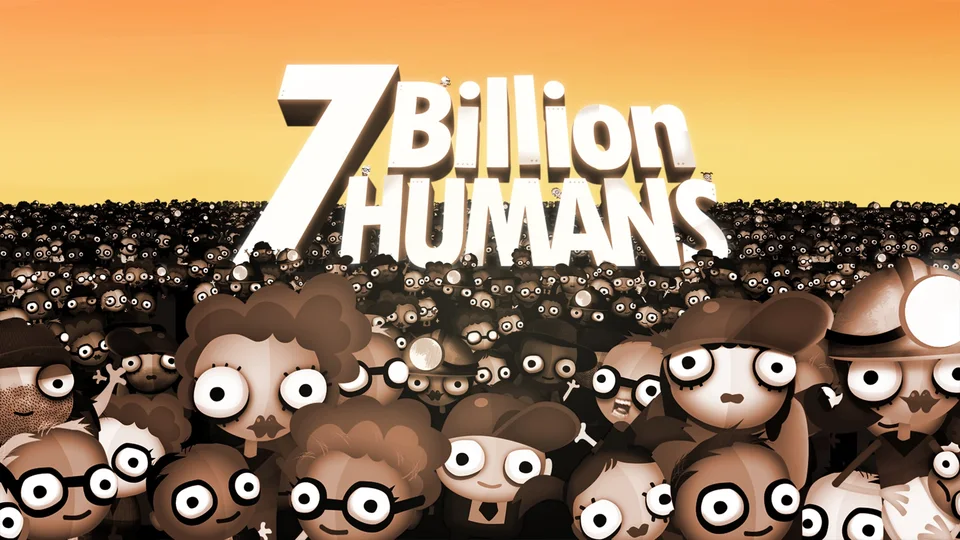
ASystems and logic
A follow-up to Human Resource Machine that adds multiple workers, concurrency, and more complicated constraints.
Useful for decomposition, optimization, and parallel-process thinking.
Official page Research PDF Image source
Image from Nintendo product page.
The twist here is that your instructions are no longer guiding one tidy process. You are managing many workers at once, which forces you to think about coordination, edge cases, and scale.
That makes it valuable for a different slice of reasoning than ordinary puzzle games: the player has to write solutions that survive concurrency rather than a single predictable path.
It still simplifies reality, but the structure is explicit enough to count as direct logic practice.
Evidence A. Direct skill practice or domain-specific measurement inside the software.
Systems and logic
A visual puzzle and simulation game about machine-learning concepts, data flow, and pipeline design.
Useful for conceptual literacy around models, inputs, outputs, and system tradeoffs.
Official page Research PDF Image source
Image from Nintendo product page.
This is not a real coding notebook, but it does ask you to think in diagrams, pipelines, model behavior, and iterative improvements instead of treating AI as magic.
That makes it useful as a conceptual bridge. A player practices reasoning about data routes, bottlenecks, and why a system might underperform before reaching for buzzwords.
The title should still be framed carefully, but its educational value is much more concrete than most games with 'tech' flavor text.
Evidence A. Direct skill practice or domain-specific measurement inside the software.
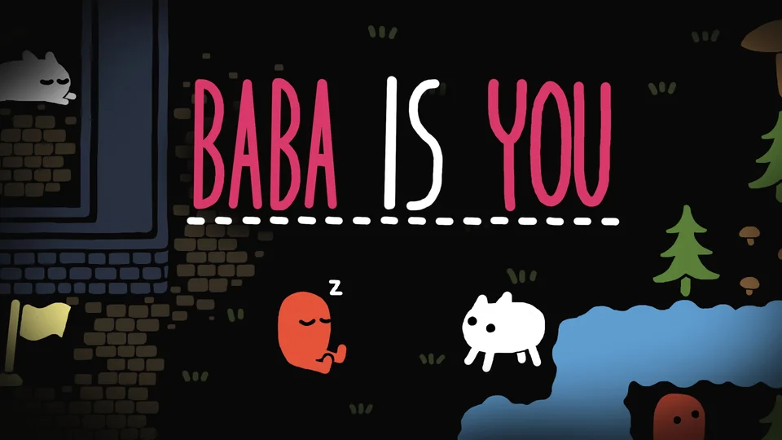
BSystems and logic
Rule-manipulation puzzle game where you change the logic statements that define how a level behaves.
Useful for formal logic, reframing, and learning to change the constraints instead of only the route.
Official page Research PDF Image source
Image from Nintendo product page.
The reason Baba Is You stands out is that the puzzle is often the rule set itself. Moving a word tile can redefine the world rather than merely solve it.
That makes it excellent for practicing a certain kind of flexible reasoning: question the assumption, rewrite the condition, and see what new state becomes possible.
Evidence stays at B because the transfer claim is about the style of thinking it encourages, not a direct built-in life skill curriculum.
Evidence B. Strong drill structure or mechanic-level support, but not game-specific proof.
Systems and logic
Factory-building and logistics design on a large scale, with research trees, throughput problems, and automation chains.
Useful for process thinking, bottleneck awareness, and systems planning.
Official site Research PDF Image source
Image from Official site.
Factorio asks you to design systems that keep working as they scale. Mining, refining, routing, and production all interact, and small inefficiencies eventually become obvious.
That makes it unusually good at exposing the player to bottlenecks, dependency chains, and the cost of messy infrastructure. The habit it rewards is structured systems maintenance.
The real-world value is still inferential rather than measured directly, so B is the honest grade.
Evidence B. Strong drill structure or mechanic-level support, but not game-specific proof.
Move on purpose
Games that turn the Switch into a structured exercise prompt with repetition, tracking, or clear form cues.
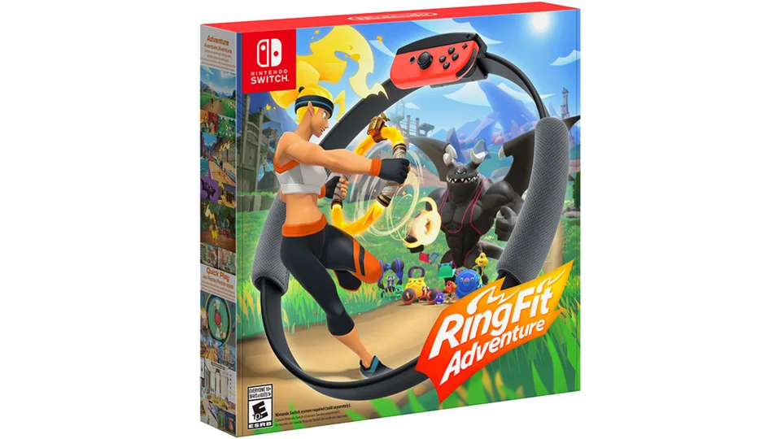
AMovement and fitness
Exercise-driven adventure that uses jogging, presses, squats, and yoga poses as the actual control system.
Useful for turning exercise into a repeatable routine with feedback and progression.
Official page Research PDF Image source
Image from Nintendo product page.
The key point is simple: movement is not decorative here. Jogging, resistance work, and pose-based actions are the means of play, and the game builds progression around them.
That gives it a stronger evidence footing than most motion-controlled titles. It can genuinely function as an adherence tool for cardio, light strength work, and body-awareness routines.
It should still be framed as exercise support, not a replacement for expert coaching or medical guidance, but this is one of the clearest A-tier entries on the board.
Evidence A. Direct skill practice or domain-specific measurement inside the software.
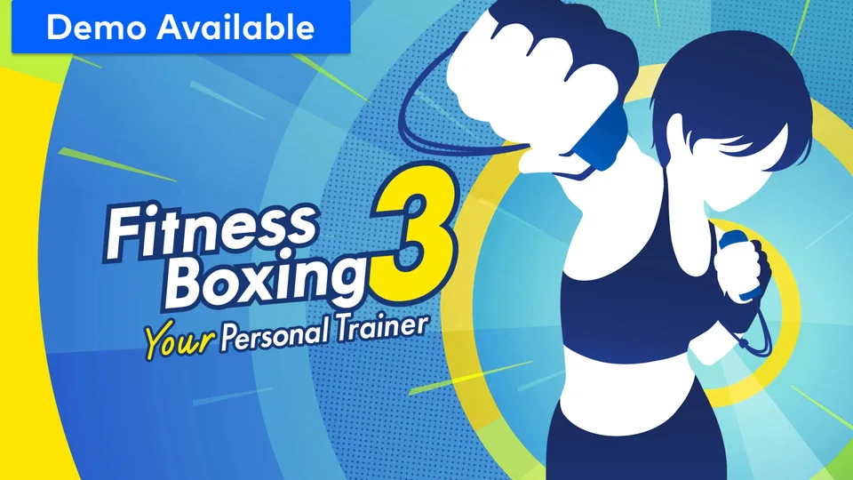
BMovement and fitness
A rhythm-guided boxing workout system with daily plans, personalization, seated options, and progress tracking.
Useful for habit formation when consistency matters more than novelty.
Official page Research PDF Image source
Image from Nintendo product page.
What matters here is the structure: short sessions, a clear schedule, activity tracking, and enough adaptation to keep the routine sustainable.
That makes the title more interesting as a behavior-support tool than as a game review object. The value comes from helping people return to a workout rhythm repeatedly.
Evidence stays at B because the support is strongest at the category and routine-design level rather than as a title-specific clinical claim.
Evidence B. Strong drill structure or mechanic-level support, but not game-specific proof.
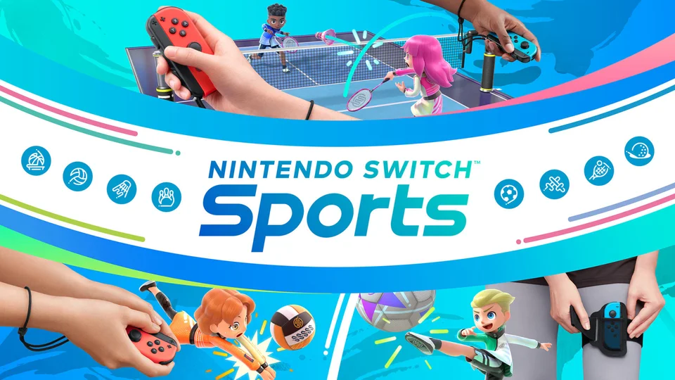
BMovement and fitness
Motion-controlled sports with repeated swings, strikes, and reactions that work especially well for social repetition.
Useful for light coordination practice when motivation comes from low-friction multiplayer sessions.
Official page Research PDF Image source
Image from Nintendo product page.
Switch Sports is not a fitness plan, but it is very good at getting people to repeat the same broad movement families in a playful context.
That makes it useful as a light coordination and adherence prompt, especially for households that respond better to social play than to formal workout software.
It earns a B because the mechanic-level rationale is solid, while the transfer claims should stay modest.
Evidence B. Strong drill structure or mechanic-level support, but not game-specific proof.
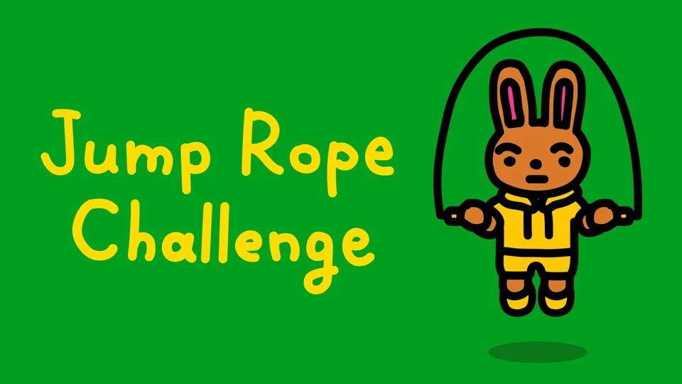
BMovement and fitness
A very small daily jump-rope routine on Switch designed to lower friction and make movement easier to start.
Useful when the main challenge is getting yourself to begin a short movement habit.
Official page Research PDF Image source
Image from Nintendo product page.
Its strength is not complexity. It is the opposite: the title removes as much setup and decision fatigue as possible so that 'do a little bit today' becomes easy.
That makes it a good example of habit-support design. The player gets a low-friction prompt, lightweight tracking, and a routine that is short enough to repeat.
The benefit claim should remain narrow, but for simple consistency this is a credible B-tier pick.
Evidence B. Strong drill structure or mechanic-level support, but not game-specific proof.
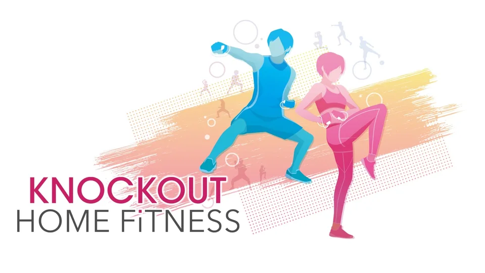
BMovement and fitness
Short kickboxing-inspired workouts with coaching, daily sessions, and progress feedback.
Useful for people who want guided intensity in compact sessions.
Official page Research PDF Image source
Image from Nintendo product page.
The loop is structured around short, guided sessions rather than broad exploration. That makes the title more practical than flashy if your goal is simply to keep a home workout streak alive.
Its usefulness is strongest where tracking, coach prompts, and constrained session length help the player stay compliant over time.
The evidence case is category-level rather than title-specific, so B remains the right grade.
Evidence B. Strong drill structure or mechanic-level support, but not game-specific proof.
Practice timing
Useful when the value is repeated timing accuracy, pattern recognition, and deliberate coordination drills.
Rhythm and timing
Classical music rhythm play focused on timing windows, recurring patterns, and composer-led song libraries.
Useful for deliberate timing practice and pattern recognition.
Official page Research PDF Image source
Image from Nintendo product page.
PIANISTA is useful because it narrows the loop to precision and repetition. You are reading incoming patterns, matching timing, and gradually tolerating denser arrangements.
That makes it a better fit for deliberate rhythm practice than broad 'music vibes' language would suggest. The skill connection is visible in the act itself.
It still stops short of teaching real piano technique, which is why the claim should stay grounded at Evidence B.
Evidence B. Strong drill structure or mechanic-level support, but not game-specific proof.
Rhythm and timing
Arcade-style drumming game with a large song set, repeatable difficulty ladders, and obvious timing feedback.
Useful for repeated timing drills with clear improvement signals.
Official page Research PDF Image source
Image from Nintendo product page.
Taiko is valuable because the feedback is immediate and legible. You know whether your timing was late, early, or clean, and the song library gives you a reason to repeat the exercise.
That makes it effective as a deliberate-practice loop for timing and coordination, especially when a player enjoys chasing cleaner execution over time.
The board should still avoid overclaiming. This is strong practice structure, not proof of broad life improvement.
Evidence B. Strong drill structure or mechanic-level support, but not game-specific proof.
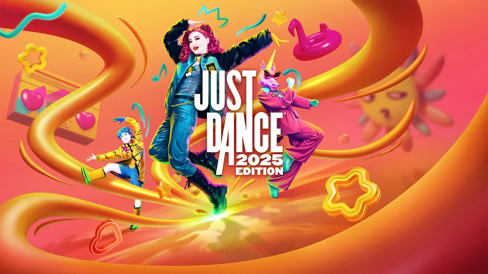
BRhythm and timing
Dance routines on Switch with workout framing, score feedback, and enough novelty to keep repetition from feeling mechanical.
Useful for cardio adherence when rhythm and fun are the main motivators.
Official page Research PDF Image source
Image from Nintendo product page.
The real value here is that dance can make repetition more tolerable than a plainly instrumental workout app. The player still has to match movement patterns and maintain effort.
That means the title can function as both a rhythm exercise and a cardio-support tool, especially for people who respond poorly to dry training programs.
Evidence B is appropriate because the benefit depends heavily on actual use, intensity, and personal fit.
Evidence B. Strong drill structure or mechanic-level support, but not game-specific proof.
Coordinate with others
Co-op titles where role clarity, concise language, and shared situational awareness are the real work.
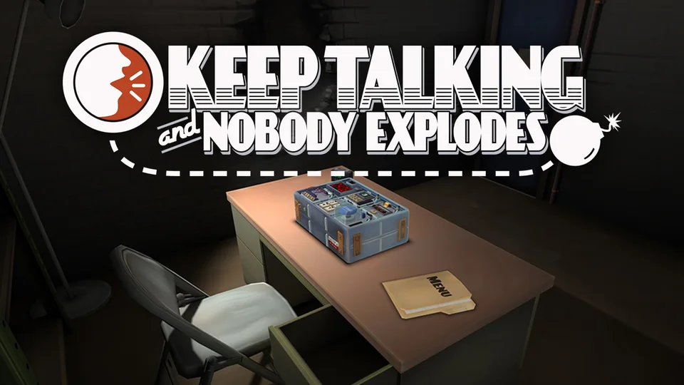
ACommunication and teamwork
One player sees the bomb, others read the manual, and the whole task depends on precise communication under pressure.
Useful for closed-loop communication, role clarity, and mutual verification habits.
Official page Research PDF Image source
Image from Nintendo product page.
This title earns its place because the useful behavior is not an interpretation layered on top of the game. The mechanic itself is concise instruction exchange under time pressure.
Players have to describe, confirm, correct, and stay calm enough to avoid information collapse. That makes it unusually good practice for shared language and role discipline.
It receives Evidence A because the communication training demand is baked directly into the structure of play.
Evidence A. Direct skill practice or domain-specific measurement inside the software.
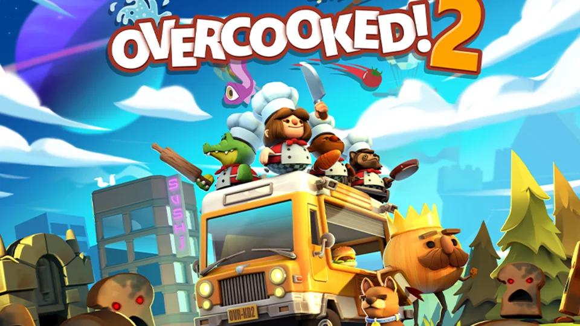
BCommunication and teamwork
Chaotic co-op kitchen game about delegation, timing, task handoffs, and staying coordinated while the plan changes.
Useful for practicing announce-confirm-adjust teamwork habits.
Official site Research PDF Image source
Image from Official site.
Overcooked works because it punishes silent assumptions. If nobody calls a handoff, watches the queue, or notices a blocked station, the whole kitchen slows down immediately.
That makes it useful for practicing task delegation and lightweight operational chatter in a way that is vivid but low stakes.
The transfer remains contextual, so B is more honest than pretending it is a general teamwork certification.
Evidence B. Strong drill structure or mechanic-level support, but not game-specific proof.
Recover without noise
Lower-pressure games that can support decompression, gentle planning, or reflective play for some people.
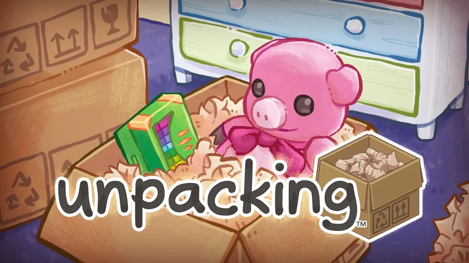
BCalm routines and reflection
A low-pressure organization game with no timers or scores, built around placing objects and inferring a life through space.
Useful for mindful focus and decompression after noisier work.
Official page Research PDF Image source
Image from Nintendo product page.
Unpacking keeps the loop simple: take one thing out, decide where it belongs, and slowly turn a blank room into a lived-in one. That predictable structure is what makes it calming for many players.
Its practical value is less about hard training and more about gentle focus without punishment. For some people, that kind of quiet attention is exactly the point.
The claim should stay modest, but the design is clear enough to justify a solid B for restorative use.
Evidence B. Strong drill structure or mechanic-level support, but not game-specific proof.
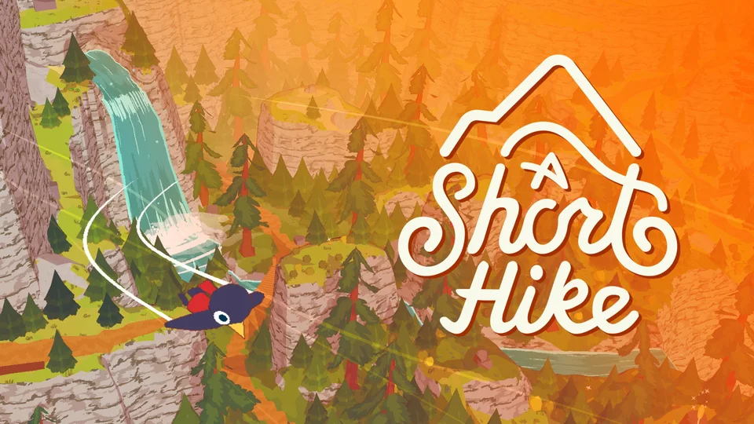
CCalm routines and reflection
A peaceful exploration game built around short conversations, small detours, and a clear sense that nothing important needs rushing.
Useful as a low-arousal reset rather than as a formal skill trainer.
Official page Research PDF Image source
Image from Nintendo product page.
A Short Hike is valuable mostly because of pacing. It gives the player room to wander, talk, and complete small tasks without the usual pressure stack of busywork and failure penalties.
That can make it a good recovery game when the real need is a gentle reset, not stimulation or competition.
The evidence is indirect and player-dependent, so it belongs in C rather than pretending more certainty.
Evidence C. Plausible usefulness with more indirect support; worth trying, not proven.
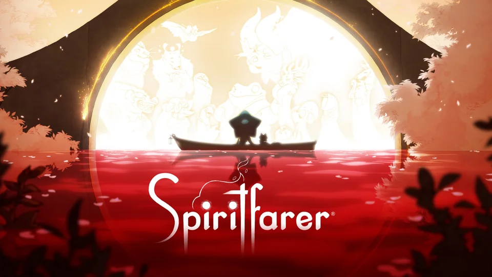
CCalm routines and reflection
Cozy management and relationship game built around care routines, gentle task cycles, and emotionally reflective themes.
Useful for players who want soft structure with room for emotional processing.
Official page Research PDF Image source
Image from Nintendo product page.
The loop here mixes caring tasks, upgrades, and steady routine with a story that is explicitly about parting and care. That combination can make the game feel restorative or reflective rather than merely cozy.
Its usefulness is not a hard transfer claim. It is better understood as a supportive space for gentle structure and emotional engagement.
Because the evidence is mostly indirect, the honest grade is C.
Evidence C. Plausible usefulness with more indirect support; worth trying, not proven.
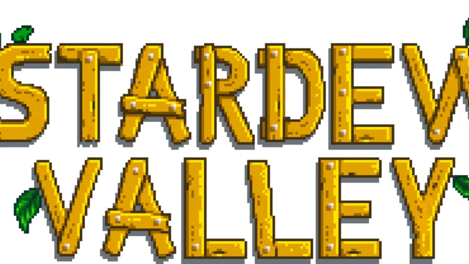
CCalm routines and reflection
Farming and town-life sim with daily loops, long-horizon planning, and low-stakes repetition.
Useful for gentle routine-building and relaxed planning for the right player.
Official site Research PDF Image source
Image from Official site.
Stardew Valley's real appeal is its cadence. Days are short, tasks are comprehensible, and progress accrues through repeated maintenance rather than crisis management.
That makes it useful for players who find calm in routine and soft planning. The long horizon matters more than any one session.
The board keeps it at C because the wellbeing benefit is plausible and common, but far from universal or tightly measured.
Evidence C. Plausible usefulness with more indirect support; worth trying, not proven.
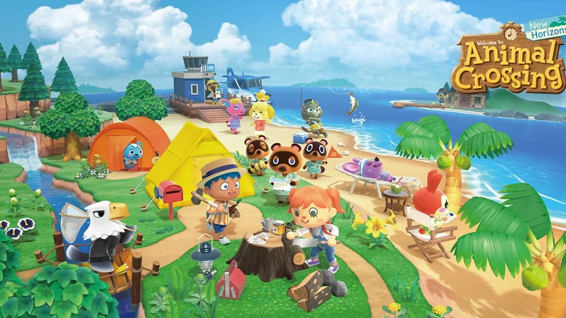
BCalm routines and reflection
Daily-life simulation with crafting, collecting, social visits, and a famously gentle pace.
Useful for low-stress routine and comfort play, with some broader wellbeing research nearby.
Official site Research PDF Image source
Image from Official site.
Animal Crossing works as a restorative note because its rhythm is predictable, friendly, and easy to revisit in small doses. The player gets routine without much fear of failure.
That alone would make it a plausible C-tier pick, but it gets lifted to B because there is at least some telemetry-linked wellbeing research in the broader conversation around commercial play.
The claim should still stay narrow: this can support relaxation for some players, not guarantee mental health outcomes.
Evidence B. Strong drill structure or mechanic-level support, but not game-specific proof.
Use carefully
Structured daily drills with real repetition, but with clear limits on what should and should not be claimed.
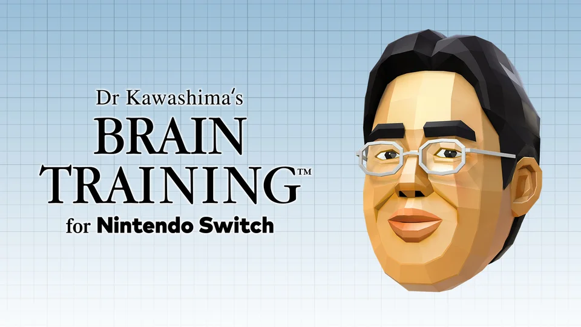
BCautious brain drills
Daily arithmetic, memory, and speed tasks wrapped in a measurement-heavy routine that encourages repeated sessions.
Useful for near-transfer drill habits if you keep the claims narrow.
Official page (AU) Research PDF Image source
Image from Nintendo product page.
This is one of the few titles where the training intention is explicit: you are doing repeated mental drills and seeing the software measure performance over time.
That makes it useful as structured practice in the narrow sense. What it does not justify is the leap from 'I repeated these tasks' to big promises about general intelligence or long-term prevention.
Evidence B is the careful middle ground: real drill structure, mixed transfer literature, and a strong need for restraint in how the note is written.
Evidence B. Strong drill structure or mechanic-level support, but not game-specific proof.